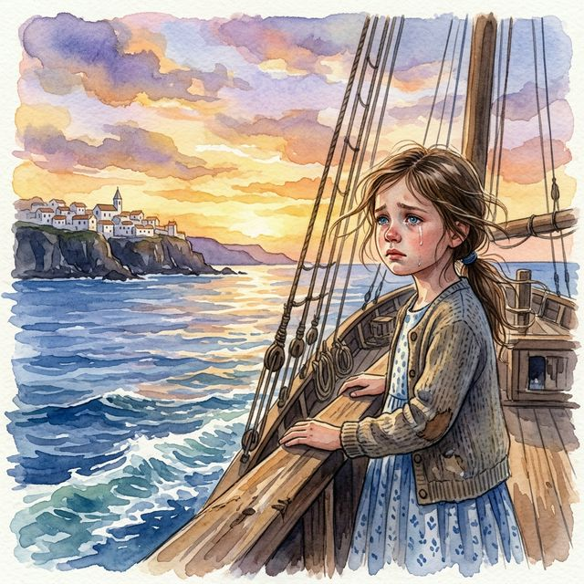

Con apenas tres versos, Paz Arés Osset define la dualidad que ha marcado toda su existencia. La artista nació en un territorio que pertenecía administrativamente a España, pero cuya tierra, viento y mar eran inconfundiblemente africanos. No es una identidad dividida, sino multiplicada: es africana porque sus primeros recuerdos huelen a Atlántico y arena del Sahara; es europea porque la lengua de su infancia fue el castellano y las tradiciones de su hogar eran mediterráneas. Esta primera estrofa no es una presentación — es una declaración de pertenencia a dos mundos.In just three lines, Paz Arés Osset defines the duality that has marked her entire existence. She was born in a territory that administratively belonged to Spain, but whose land, wind, and sea were unmistakably African. It is not a divided identity, but a multiplied one: she is African because her first memories smell of the Atlantic and Saharan sand; she is European because the language of her childhood was Spanish. This opening stanza is not an introduction — it is a declaration of belonging to two worlds.Всего тремя строками Пас Арес Оссет определяет двойственность, которая отметила всю её жизнь. Она родилась на территории, административно принадлежавшей Испании, но чья земля, ветер и море были безошибочно африканскими. Это не разделённая идентичность, а умноженная: она африканка, потому что её первые воспоминания пахнут Атлантикой и сахарским песком; она европейка, потому что языком её детства был испанский.Лише трьома рядками Пас Арес Оссет визначає двоїстість, що відзначила все її існування. Вона народилася на території, що адміністративно належала Іспанії, але чия земля, вітер і море були безпомилково африканськими. Це не розділена ідентичність, а помножена.In soli tre versi, Paz Arés Osset definisce la dualità che ha segnato tutta la sua esistenza. È nata in un territorio amministrativamente spagnolo, ma la cui terra, vento e mare erano inconfondibilmente africani. Non è un'identità divisa, ma moltiplicata.仅用三行诗，Paz Arés Osset 就定义了标记她一生的双重性。她出生在行政上属于西班牙的领土，但那片土地、风和海洋却是不可否认的非洲。这不是分裂的身份，而是倍增的身份。في ثلاثة أبيات فقط، تحدد باز أريس أوسيت الازدواجية التي ميزت حياتها بأكملها. ولدت في أرض تابعة إدارياً لإسبانيا، لكن أرضها ورياحها وبحرها كانت أفريقية بلا شك. إنها ليست هوية منقسمة بل متضاعفة.In nur drei Versen definiert Paz Arés Osset die Dualität, die ihre gesamte Existenz geprägt hat. Sie wurde in einem Gebiet geboren, das administrativ zu Spanien gehörte, dessen Land, Wind und Meer jedoch unverkennbar afrikanisch waren. Es ist keine geteilte Identität, sondern eine vervielfachte.En à peine trois vers, Paz Arés Osset définit la dualité qui a marqué toute son existence. Elle est née sur un territoire administrativement espagnol, mais dont la terre, le vent et la mer étaient indéniablement africains. Ce n'est pas une identité divisée, mais multipliée.わずか3行でパス・アレス・オセットは彼女の全存在を特徴づける二重性を定義しています。彼女は行政上スペインに属する領土で生まれましたが、その土地、風、海は紛れもなくアフリカのものでした。これは分断された アイデンティティではなく、増幅されたものです。Em apenas três versos, Paz Arés Osset define a dualidade que marcou toda a sua existência. Nasceu num território administrativamente espanhol, mas cuja terra, vento e mar eram inconfundivelmente africanos. Não é uma identidade dividida, mas multiplicada.
Aquí el poema se adentra en el drama: Paz nació el 29 de octubre de 1954 en condiciones difíciles, en una época en que los hospitales del desierto no ofrecían los avances de la medicina europea. Sobrevivió, y lo hace constar como una hazaña — «superviviente en mi difícil nacer». Pero la verdadera tormenta llegó después: la Guerra de Ifni (1957-1958), un conflicto armado que sacudió la colonia cuando Paz apenas tenía tres años. La palabra «añitos» — diminutivo cargado de ternura — contrasta brutalmente con «calamidades y miedos». Es este contraste el que define la memoria de Paz: una infancia donde la inocencia convivía con el peligro.Here the poem delves into drama: Paz was born on October 29, 1954, under difficult conditions, at a time when desert hospitals lacked modern medicine. She survived, and she states it as a feat — "survivor of my difficult birth." But the real storm came later: the Ifni War (1957-1958), an armed conflict that shook the colony when Paz was barely three. The word "añitos" (little years) — a diminutive loaded with tenderness — contrasts brutally with "calamities and fears."Здесь стихотворение погружается в драму: Пас родилась 29 октября 1954 года в тяжёлых условиях. Она выжила и отмечает это как подвиг. Но настоящая буря пришла позже: война при Ифни (1957-1958), вооружённый конфликт, потрясший колонию, когда Пас было всего три года. Слово «añitos» (годики) — уменьшительное, наполненное нежностью — жёстко контрастирует с «невзгодами и страхами».Тут вірш занурюється в драму: Пас народилася 29 жовтня 1954 року у важких умовах. Вона вижила і відзначає це як подвиг. Але справжня буря прийшла пізніше: війна за Іфні (1957-1958), збройний конфлікт, коли Пас було лише три роки.Qui la poesia si addentra nel dramma: Paz nacque il 29 ottobre 1954 in condizioni difficili. Sopravvisse, e lo presenta come un'impresa. Ma la vera tempesta arrivò dopo: la Guerra di Ifni (1957-1958), quando Paz aveva appena tre anni. La parola «añitos» — un diminutivo carico di tenerezza — contrasta brutalmente con «calamità e paure».在这里，诗歌深入了戏剧性：Paz于1954年10月29日在艰难的条件下出生。她幸存下来了。但真正的风暴后来才到来：伊夫尼战争（1957-1958），当Paz只有三岁时。هنا تغوص القصيدة في الدراما: ولدت باز في 29 أكتوبر 1954 في ظروف صعبة. نجت وتسجل ذلك كإنجاز. لكن العاصفة الحقيقية جاءت لاحقاً: حرب إفني (1957-1958)، صراع مسلح عندما كانت باز في الثالثة من عمرها فقط.Hier taucht das Gedicht ins Drama ein: Paz wurde am 29. Oktober 1954 unter schwierigen Bedingungen geboren. Sie überlebte. Aber der wahre Sturm kam später: der Ifni-Krieg (1957-1958), als Paz gerade drei Jahre alt war. Das Wort «añitos» — ein zärtliches Diminutiv — kontrastiert brutal mit «Katastrophen und Ängsten».Ici le poème plonge dans le drame : Paz est née le 29 octobre 1954 dans des conditions difficiles. Elle a survécu. Mais la vraie tempête est venue après : la Guerre d'Ifni (1957-1958), quand Paz n'avait que trois ans. Le mot « añitos » — diminutif chargé de tendresse — contraste brutalement avec « calamités et peurs ».ここで詩はドラマに入ります：パスは1954年10月29日、困難な状況で生まれました。彼女は生き延び、それを偉業として記しています。しかし本当の嵐はその後に来ました：イフニ戦争（1957-1958）、パスがわずか3歳の時でした。Aqui o poema mergulha no drama: Paz nasceu a 29 de outubro de 1954 em condições difíceis. Sobreviveu e regista-o como uma proeza. Mas a verdadeira tempestade veio depois: a Guerra de Ifni (1957-1958), quando Paz tinha apenas três anos.

Tras la guerra, llegó la luz. Diez años de plenitud que el poema describe como un torrente de vida: padres, hermanas, amigos, fiestas. Pero en medio de la alegría, Paz desliza un verso desgarrador: «Tuve 5 hermanitos no nacidos». Cinco hermanos que no llegaron a vivir, tragedias íntimas que la familia sobrellevó en silencio. El poema no se detiene en el dolor — lo menciona con la naturalidad de quien ha aprendido que la pérdida y la celebración conviven. Inmediatamente después, la vida vuelve a irrumpir: «Fiestas, música y bailes.»After the war came the light. Ten years of fullness, described as a torrent of life: parents, sisters, friends, celebrations. But amid the joy, Paz slips in a heartbreaking line: "I had 5 unborn siblings." Five brothers and sisters who never lived — intimate tragedies the family bore in silence. The poem doesn't dwell on pain — it mentions it with the naturalness of someone who has learned that loss and celebration coexist.После войны пришёл свет. Десять лет полноты жизни: родители, сёстры, друзья, праздники. Но среди радости Пас вставляет душераздирающую строку: «У меня было 5 нерождённых братьев и сестёр». Пятеро детей, не пришедших в этот мир — интимные трагедии, которые семья переносила молча.Після війни прийшло світло. Десять років повноти: батьки, сестри, друзі, свята. Але серед радості Пас вставляє зворушливий рядок: «У мене було 5 ненароджених братиків і сестричок». П'ятеро дітей, які не прийшли у цей світ.Dopo la guerra venne la luce. Dieci anni di pienezza: genitori, sorelle, amici, feste. Ma in mezzo alla gioia, Paz inserisce un verso straziante: «Ho avuto 5 fratellini mai nati». Cinque fratelli che non hanno mai vissuto — tragedie intime sopportate in silenzio.战争之后，光明降临。十年的充实：父母、姐妹、朋友、庆典。但在喜悦中，Paz插入了一句令人心碎的诗句："我有5个未出生的兄弟姐妹。"五个从未来到这个世界的孩子。بعد الحرب جاء النور. عشر سنوات من الامتلاء: الوالدان والأخوات والأصدقاء والأعياد. لكن وسط الفرح، تُدخل باز بيتاً مُفجعاً: «كان لي 5 إخوة لم يُولدوا». خمسة أطفال لم يأتوا إلى هذا العالم.Nach dem Krieg kam das Licht. Zehn Jahre der Fülle: Eltern, Schwestern, Freunde, Feste. Aber inmitten der Freude gleitet Paz eine herzzerreißende Zeile ein: «Ich hatte 5 ungeborene Geschwister». Fünf Kinder, die nie lebten.Après la guerre vint la lumière. Dix ans de plénitude : parents, sœurs, amis, fêtes. Mais au milieu de la joie, Paz glisse un vers déchirant : « J'ai eu 5 petits frères et sœurs non nés ». Cinq enfants qui n'ont jamais vécu.戦争の後、光が訪れました。10年間の充実：両親、姉妹、友人、祭り。しかし喜びの中、パスは胸が張り裂けるような一行を挿入します：「5人の生まれなかった兄弟姉妹がいました。」Após a guerra veio a luz. Dez anos de plenitude: pais, irmãs, amigos, festas. Mas no meio da alegria, Paz desliza um verso dilacerante: «Tive 5 irmãozinhos que não nasceram». Cinco crianças que nunca viveram.
Este es, quizá, el momento más poderoso del poema. Paz juega con su propio nombre — «Paz» — fundiéndolo con el concepto de paz interior. Su espíritu «renacía» — no nacía, renacía — cada día en aquel paraíso. Y luego, la imagen central de su universo: el acantilado. Lo alto de la roca donde el horizonte se dibuja en «color cobalto azulado», ese azul que aparece una y otra vez en sus pinturas, en sus poemas, en su alma. Es el color de Ifni.This is perhaps the most powerful moment of the poem. Paz plays with her own name — "Paz" (Peace) — merging it with the concept of inner peace. Her spirit was "reborn" — not born, reborn — every day in that paradise. And then, the central image of her universe: the cliff. The top of the rock where the horizon is drawn in "bluish cobalt color," that blue that appears again and again in her paintings, her poems, her soul. It is the color of Ifni.Это, пожалуй, самый мощный момент стихотворения. Пас играет со своим именем — «Пас» (Мир) — сливая его с понятием внутреннего мира. Её дух «возрождался» — не рождался, а возрождался — каждый день в том раю. А затем — центральный образ её вселенной: утёс, с которого горизонт окрашен в «цвет синего кобальта». Этот цвет Ифни.Це, мабуть, найпотужніший момент вірша. Пас грає зі своїм ім'ям — «Пас» (Мир) — зливаючи його з поняттям внутрішнього миру. Її дух «відроджувався» щодня в тому раю. А потім — центральний образ її всесвіту: скеля з обрієм у «кольорі синього кобальту».Questo è forse il momento più potente della poesia. Paz gioca con il suo nome — "Paz" (Pace) — fondendolo con il concetto di pace interiore. Il suo spirito «rinasceva» ogni giorno in quel paradiso. E poi, l'immagine centrale del suo universo: la scogliera, dove l'orizzonte si dipinge di «colore cobalto azzurro». È il colore di Ifni.这也许是全诗最有力的时刻。Paz用自己的名字——"Paz"（和平）——与内在宁静的概念融合。她的精神每天在那个天堂中"重生"。然后是她宇宙的核心意象：悬崖，地平线在那里绘成"钴蓝色"。那是伊夫尼的颜色。هذه ربما اللحظة الأكثر قوة في القصيدة. تلعب باز بإسمها — «باز» (السلام) — دامجةً إياه مع مفهوم السلام الداخلي. روحها «تولد من جديد» كل يوم في تلك الجنة. ثم الصورة المركزية لعالمها: الجرف، حيث الأفق يُرسم بـ«لون الكوبالت الأزرق». إنه لون إفني.Dies ist vielleicht der kraftvollste Moment des Gedichts. Paz spielt mit ihrem eigenen Namen — «Paz» (Frieden) — und verschmilzt ihn mit dem Konzept des inneren Friedens. Ihr Geist wurde jeden Tag in jenem Paradies «wiedergeboren». Und dann das zentrale Bild ihres Universums: die Klippe, wo der Horizont in «kobaltblauer Farbe» gezeichnet ist. Es ist die Farbe von Ifni.C'est peut-être le moment le plus puissant du poème. Paz joue avec son propre nom — « Paz » (Paix) — le fusionnant avec le concept de paix intérieure. Son esprit « renaissait » chaque jour dans ce paradis. Et ensuite, l'image centrale de son univers : la falaise, où l'horizon se dessine en « couleur cobalt bleuté ». C'est la couleur d'Ifni.これはおそらく詩の最も力強い瞬間です。パスは自分の名前「パス」（平和）を内なる平和の概念と融合させています。彼女の魂はあの楽園で毎日「再生」していました。そして彼女の宇宙の中心的イメージ：断崖、地平線が「コバルトブルー」に描かれる場所。それがイフニの色です。Este é talvez o momento mais poderoso do poema. Paz joga com o seu próprio nome — «Paz» — fundindo-o com o conceito de paz interior. O seu espírito «renascia» todos os dias naquele paraíso. E depois, a imagem central do seu universo: a falésia, onde o horizonte se desenha em «cor cobalto azulada». É a cor de Ifni.

El giro devastador. La pregunta retórica que esconde un grito: ¿Quién me iba a decir? A los 14 años, la familia Arés fue obligada a abandonar Sidi Ifni para evitar las consecuencias de otro conflicto. Paz no dice «me fui» sino «Ifni me abandonaría» — es la tierra la que la deja ir, no al revés. Y la palabra que elige para describir su situación es «exiliada». «Por España viví sin mi océano» — un verso seco, directo, que condensa veinticinco años de nostalgia en nueve palabras.The devastating turn. The rhetorical question that hides a scream: Who would have told me? At 14, the Arés family was forced to leave Sidi Ifni to avoid another conflict. Paz doesn't say "I left" but "Ifni would abandon me" — it is the land that lets her go. And the word she chooses is "exiled." "In Spain I lived without my ocean" — a dry, direct line that condenses twenty-five years of nostalgia into nine words.Разрушительный поворот. Риторический вопрос, скрывающий крик. В 14 лет семья Арес была вынуждена покинуть Сиди-Ифни. Пас не говорит «я уехала», а «Ифни меня оставит» — это земля отпускает её. И слово, которое она выбирает — «изгнанница». «В Испании я жила без моего океана» — сухой стих, конденсирующий двадцать пять лет ностальгии в девять слов.Руйнівний поворот. Риторичне питання, що приховує крик. У 14 років сім'я Арес була змушена покинути Сіді-Іфні. Пас не каже «я поїхала», а «Іфні мене покине» — це земля відпускає її. «В Іспанії я жила без мого океану.»La svolta devastante. La domanda retorica che nasconde un grido. A 14 anni, la famiglia Arés fu costretta a lasciare Sidi Ifni. Paz non dice «me ne sono andata» ma «Ifni mi avrebbe abbandonata». La parola che sceglie è «esiliata». «In Spagna ho vissuto senza il mio oceano» — un verso che condensa venticinque anni di nostalgia.毁灭性的转折。修辞性的问题背后隐藏着呐喊。14岁时，Arés家族被迫离开西迪伊夫尼。Paz不说"我离开了"，而是"伊夫尼会抛弃我"。她选择的词是"被流放"。"在西班牙我活着却没有我的海洋。"المنعطف المدمر. السؤال البلاغي الذي يخفي صرخة. في سن الرابعة عشرة، أُجبرت عائلة أريس على مغادرة سيدي إفني. لا تقول باز «رحلتُ» بل «إفني ستتخلى عني». والكلمة التي تختارها هي «منفية». «في إسبانيا عشتُ بدون محيطي.»Die verheerende Wende. Die rhetorische Frage, die einen Schrei verbirgt. Mit 14 wurde die Familie Arés gezwungen, Sidi Ifni zu verlassen. Paz sagt nicht «ich ging», sondern «Ifni würde mich verlassen». Das Wort, das sie wählt, ist «Exilantin». «In Spanien lebte ich ohne meinen Ozean.»Le tournant dévastateur. La question rhétorique qui cache un cri. À 14 ans, la famille Arés fut contrainte de quitter Sidi Ifni. Paz ne dit pas « je suis partie » mais « Ifni m'abandonnerait ». Le mot qu'elle choisit est « exilée ». « En Espagne j'ai vécu sans mon océan. »壊滅的な転換点。叫びを隠す修辞的な問い。14歳で、アレス家はシディ・イフニを離れることを余儀なくされました。パスは「私が去った」とは言わず、「イフニが私を捨てる」と言います。彼女が選ぶ言葉は「追放された」。「スペインで私は私の海なしで生きた。」A viragem devastadora. A pergunta retórica que esconde um grito. Aos 14 anos, a família Arés foi obrigada a abandonar Sidi Ifni. Paz não diz «fui-me embora» mas «Ifni abandonar-me-ia». A palavra que escolhe é «exilada». «Em Espanha vivi sem o meu oceano.»
Los tres versos finales son una promesa. Paz no quiere simplemente «volver a ver» el océano — quiere respirarlo. El mar no es paisaje; es oxígeno, es vida. Y el último verso es un juego magistral: «vivir la Paz que fui allí» significa tanto recuperar la serenidad que vivió en Ifni como reencontrarse con la versión más auténtica de sí misma — la Paz original, la niña de los acantilados, la que nadaba en el mar de las siete olas bajo un cielo de cobalto azulado.The final three lines are a promise. Paz doesn't simply want to "see" the ocean again — she wants to breathe it. The sea is not landscape; it is oxygen, it is life. And the last line is a masterful play: "live the Peace that I was there" means both recovering the serenity she lived in Ifni and reuniting with the most authentic version of herself — the original Paz, the girl from the cliffs who swam in the sea of seven waves under a cobalt blue sky.Последние три строки — это обещание. Пас хочет не просто «увидеть» океан — она хочет дышать им. Море — это не пейзаж; это кислород, это жизнь. И последняя строка — мастерская игра: «жить в Мире, которым я была там» означает и обретение покоя, и воссоединение с самой подлинной версией себя — изначальной Пас, девочкой с утёсов.Останні три рядки — це обіцянка. Пас хоче не просто «побачити» океан — вона хоче дихати ним. Море — це не пейзаж; це кисень, це життя. І останній рядок — це майстерна гра: «жити в Мирі, яким я була там» означає і повернути спокій, і возз'єднатися з найсправжнішою версією себе.Gli ultimi tre versi sono una promessa. Paz non vuole semplicemente «rivedere» l'oceano — vuole respirarlo. Il mare non è paesaggio; è ossigeno, è vita. E l'ultimo verso è un gioco magistrale: «vivere la Pace che fui lì» significa sia recuperare la serenità che ritrovare la versione più autentica di sé stessa.最后三行是一个承诺。Paz不仅仅想"看到"海洋——她想呼吸它。海洋不是风景；它是氧气，是生命。最后一行是大师级的文字游戏："活出我在那里曾是的和平"既意味着找回她在伊夫尼的宁静，也意味着与最真实的自己重逢。الأبيات الثلاثة الأخيرة وعدٌ. لا تريد باز ببساطة «رؤية» المحيط — تريد تنفسه. البحر ليس منظراً طبيعياً؛ إنه أكسجين، إنه حياة. والبيت الأخير لعبة بارعة: «أعيش السلام الذي كنته هناك» تعني استعادة السكينة ولقاء النسخة الأكثر أصالة من ذاتها.Die letzten drei Verse sind ein Versprechen. Paz will den Ozean nicht einfach «wiedersehen» — sie will ihn atmen. Das Meer ist keine Landschaft; es ist Sauerstoff, es ist Leben. Und die letzte Zeile ist ein meisterhaftes Spiel: «den Frieden leben, der ich dort war» bedeutet sowohl die Gelassenheit wiederzufinden als auch sich mit der authentischsten Version ihrer selbst zu vereinen.Les trois derniers vers sont une promesse. Paz ne veut pas simplement « revoir » l'océan — elle veut le respirer. La mer n'est pas un paysage ; c'est de l'oxygène, c'est la vie. Et le dernier vers est un jeu magistral : « vivre la Paix que j'ai été là-bas » signifie retrouver la sérénité et se réunir avec la version la plus authentique d'elle-même.最後の3行は約束です。パスは単に海を「見たい」のではなく、呼吸したいのです。海は風景ではありません。それは酸素であり、命です。そして最後の行は見事な言葉遊びです：「私がそこにいた平和を生きる」は、イフニで経験した平穏を取り戻すこと、そして最も本物の自分自身と再会することの両方を意味しています。Os três versos finais são uma promessa. Paz não quer simplesmente «rever» o oceano — quer respirá-lo. O mar não é paisagem; é oxigénio, é vida. E o último verso é um jogo magistral: «viver a Paz que fui ali» significa tanto recuperar a serenidade como reencontrar-se com a versão mais autêntica de si mesma.